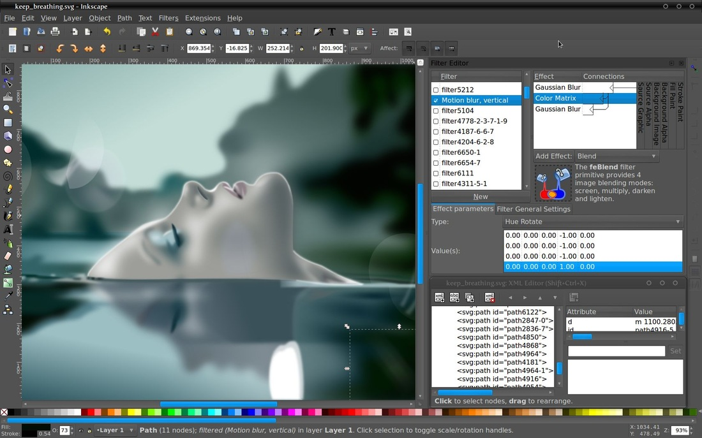
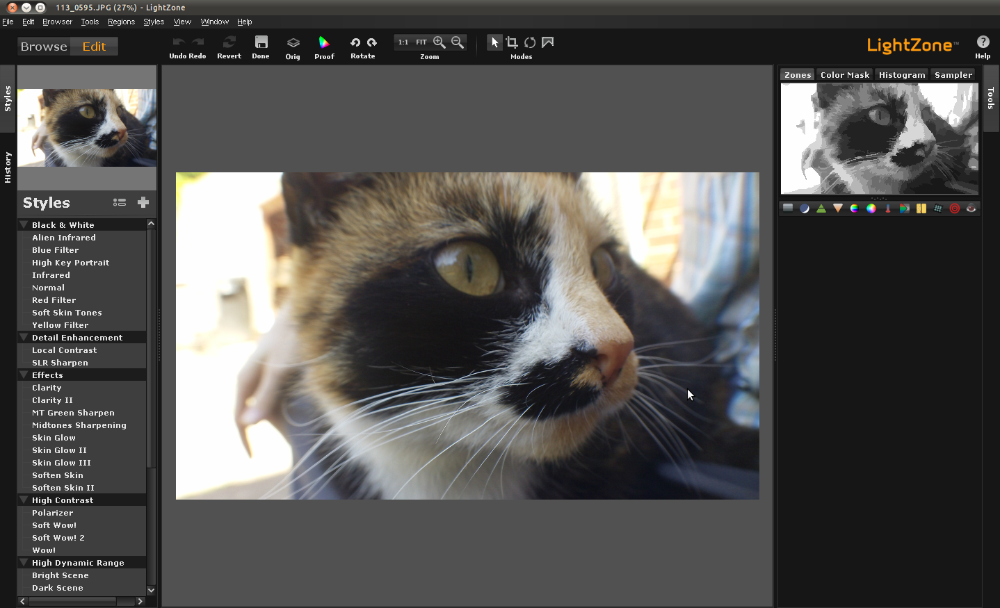

Editores de foto
O GIMP já é bastante conhecido pelos usuários de Linux. O programa conta com as mais variadas funções, sendo uma das principais alternativas ao famoso Photoshop. Por contar com extensão para o Python, usuários podem encontrar scripts online ou, ainda, escrever o seu próprio.
O Inkscape é ideal para quem trabalha com a criação de gráficos digitais e logomarcas. A ferramenta oferece uma variedade de opções para a personalização de imagens e é compatível com as extensões PDF, PNG, PostScript e muito mais.
LightZone é um programa indicado para fotógrafos. A ferramenta permite a edição de fotos com possibilidades poderosas, deixando o trabalho bastante profissional.
Krita, criado para a pintura digital, o Krita é ideal para artistas e ilustradores. No programa, o usuário pode criar as suas artes usando o mouse e o teclado ou, ainda, um tablet. O Krita suporta arquivos em PSD e exporta para os mais variados formatos.
Darktable também é um programa indicado para fotógrafos. Com ele, o usuário pode editar as suas fotos com poderosas ferramentas de manipulação de imagens. Entre os melhores recursos do Darktable estão a correção de imperfeições e anormalidades comuns encontradas na fotografia digital, bem como as variadas opções de pós-processamento.